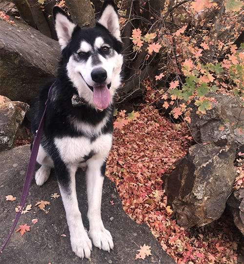
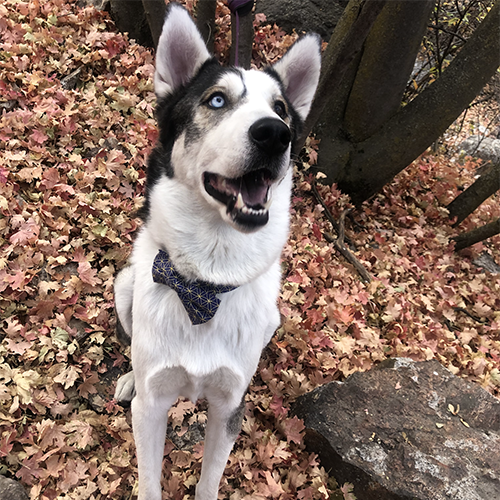
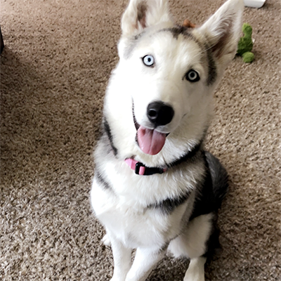
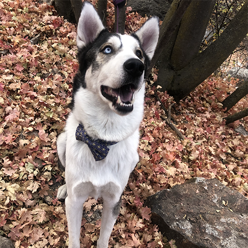
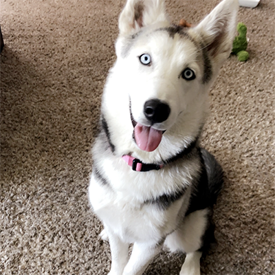
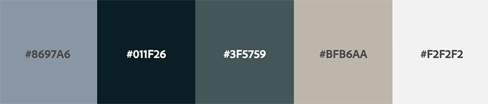

Site Name
Dakota's Rescue
Site Map
Home page, Adopting Information, Contact Page
People will come to this site to experience the breed of a husky or malamute. We will offer different selections of who is available for adoption and post information about each dog. Then under the information will be additional material about the dog itself; its temperament, behavior with children or other pets, etc. There will also be a section written about how this organization came to be - with a small -about me- narrating what drove the purpose of the rescue.
There will be a document to fill out for adoption screening and a place to put through payment for rehoming fee. People will come to this site because there will be information about the breed and what they have to offer. We will showcase their strengths while educating the audience on how to deal with a breed that requires so much attention and energy. They are a very intelligent breed and need lots of stimulation so I will provide as much detail in order to give these dogs a good home.
Site Purpose with Goals
The purpose of this site is to provide an awareness to the husky breed. The goal would be to create a place that others may go to find which of this particular breed is in need of a home. Since this is one of the most discarded breeds, the point of this site is to bring resources together so that these dogs can find a home and feel a part of a family. We live in a world where a lot of animals end up without shelter or on the street. I want to bring more awareness to the term 'adopt, don't shop.' Though they are a high energy dog, they need a chance to be in a loving enviornment just like any other. I hope to encourage everyone to check out this site before they make their next decision of bringing a dog into their home.
Audience
This site targets a wide variety of audiences including, though not limited to:- A new family looking to adopt a rescue.
- The adventurer looking for a companion to hit the trails with them.
- A home with an anxious dog who needs a friend to play out some of that high energy.
- For those who want a wolf looking breed without the maintainance of a wolf.
Website Logo

Website Images
 



Style Guide
Color Scheme
Typography
- Site Header: Aclonica
- Primary Navigation: Poppins
- Footer Navigation: Poppins
- Heading 1-3: Oswald
- Paragraph Text: Poppins